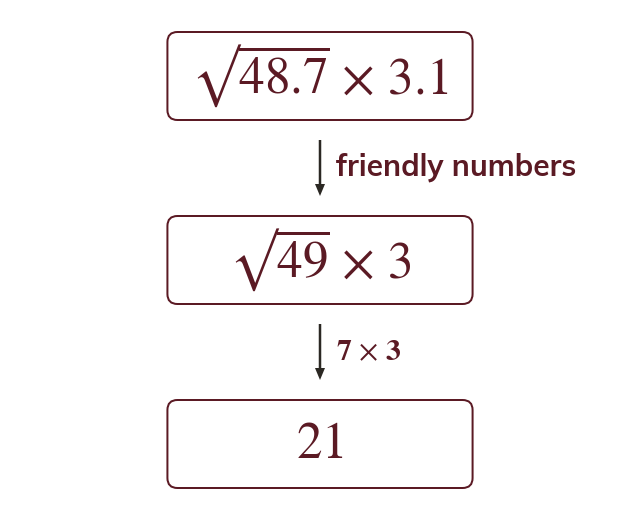
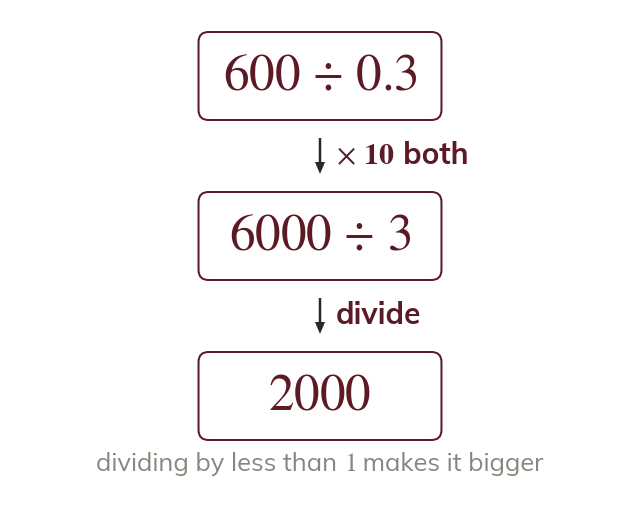
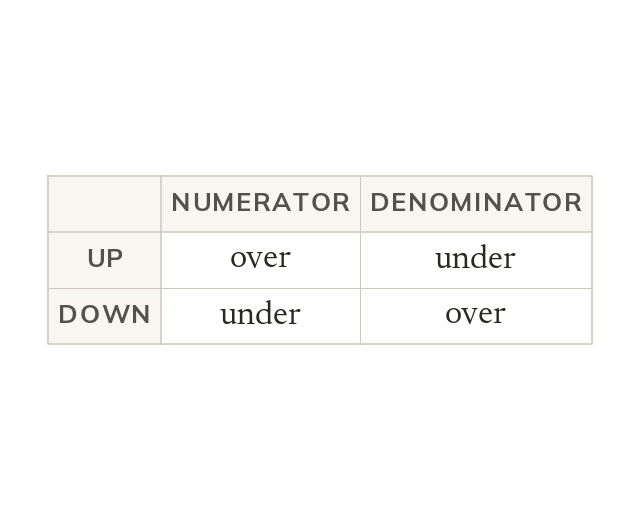
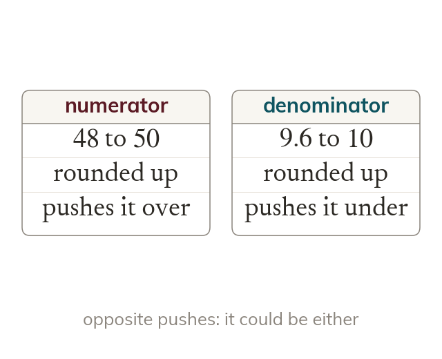

Choose friendly numbers
Round each value to a number that makes the calculation easy. A root is rounded to the nearest square number first.
Some calculations are too awkward to round to s.f. and stop. Today the rounding is chosen to make the arithmetic easy, and the direction of each rounding says whether the estimate is too big or too small.
Work down the page at your own pace. Write every answer in your book first, then click to check it.
Read each card, then follow the worked examples one step at a time.

Round each value to a number that makes the calculation easy. A root is rounded to the nearest square number first.

Dividing by a number less than makes the answer bigger. So is not
Pick an answer. If it's wrong, the feedback tells you which mistake it was.
Read each card, then follow the worked examples one step at a time.

Rounding up in the numerator makes the estimate bigger. Rounding up in the denominator makes it smaller.

If two roundings push opposite ways, the estimate could be either. Say which way each value moved, and why.
Pick an answer. If it's wrong, the feedback tells you which mistake it was.
Finished? Next lesson: 9.9.3 Upper and Lower Bounds.
For each skill, tap the one that is true for you today. Your Revise pages start with anything you mark Not yet.
Your ratings are saved on this device only.
Log in, then search for a code to practise that skill.
Videos, worksheets and more on each part of this lesson.